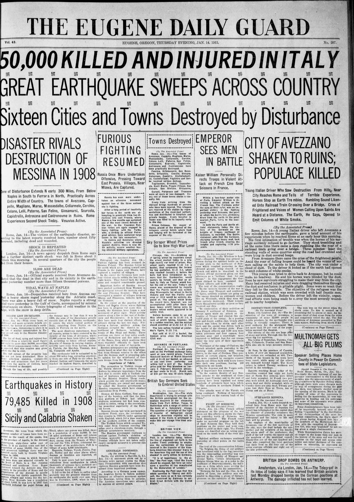
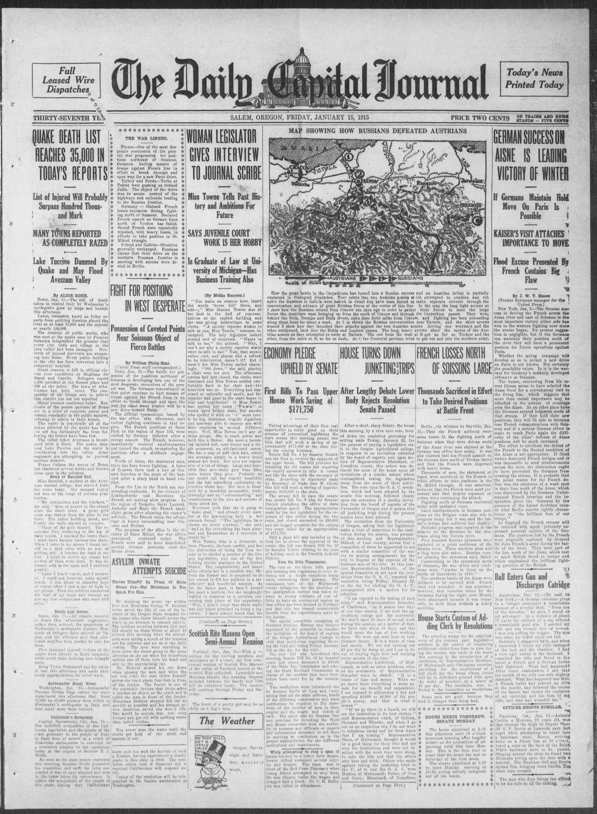
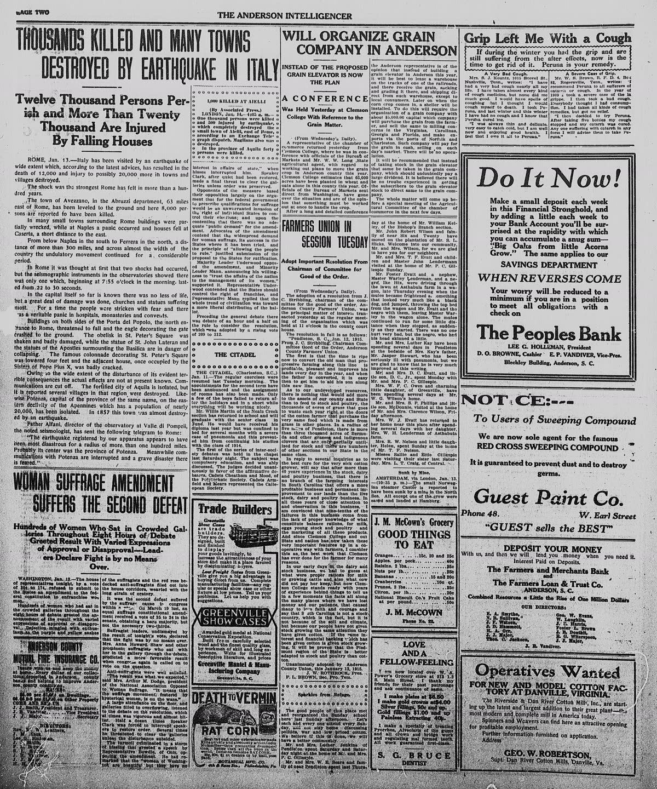

HN HN-394 · January 16, 1915 · Disasters, Accidents & Emergencies > Earthquakes & Volcanic Disasters > Earthquakes
Source: Jasper County Democrat, p. 2 — original page.
Report: Following the January 13 earthquake in Italy's Marsica/Avezzano region, the newspaper estimated 25,000–50,000 dead and injured combined, with other passages listing roughly 15,000 deaths in particular districts. It described collapsed dwellings, shattered communications and King Victor Emmanuel visiting the emergency zone.
Assessment: Crucial distinction: the large headline estimate combined fatalities and injuries, and the story's local sub-totals were preliminary. This research pass has not reconciled them with a complete Italian civil-protection death register. The earthquake is real, but do not repeat '50,000 killed' as the newspaper's finding or as a verified final count. Follow-up open.
Authentic scans retrieved from Historic Oregon Newspapers (University of Oregon) and South Carolina Historic Newspapers (University of South Carolina). Article crops are located using the archive's own OCR word coordinates and rendered at native crop resolution; page scans are reduced-size access renditions. No images were generated, mocked, or retouched.



Not yet acquired. Queued for provider-specific acquisition testing (see source-acquisition manifest).
URL (preserved verbatim): https://newspapers.library.in.gov/?a=d&d=JCDC19150116.2.11
Saved research report: Historical_Newspaper_Event_Research_378-402_2026-10-23.md
Evidence note: A newspaper report means a historical publication made a claim; it does not establish that claim as fact. Contemporary reporting is separated from later scholarly context and our own assessment.